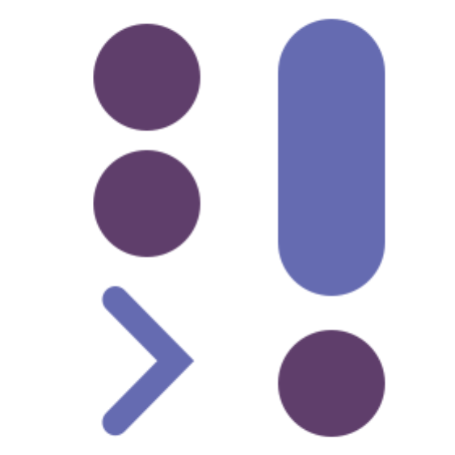
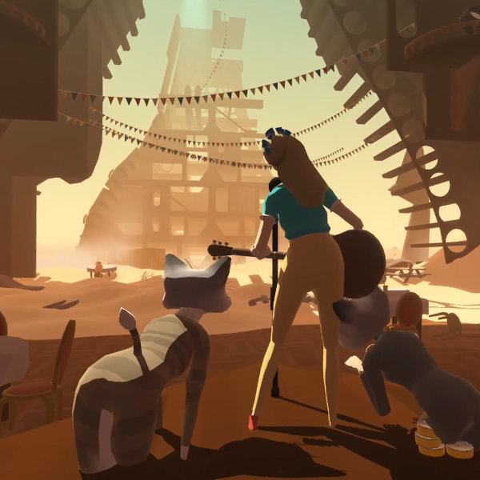
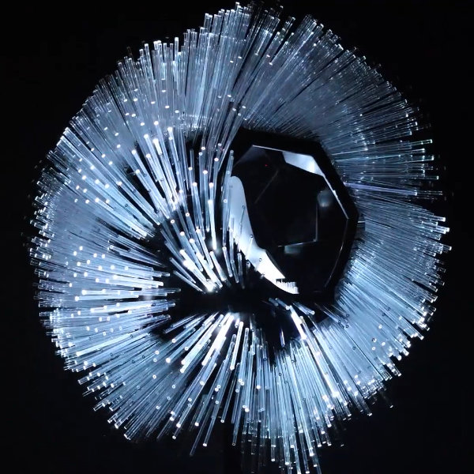

Julian V V Ceipek
julian.ceipek@gmail.com![my github projects]() jceipek
jceipekEMPLOYMENT
- 2019-2020 Dark. Engineer.
Led initiatives to unify user experience of revolutionary “live” programming environment for backend programmers, with goal of making coding 100x easier.
- Developed, documented, and tested standard toolkit with which customers build software used by 10s of thousands of end users.
- Introduced new programming paradigms and fixed biggest pain points during regular customer interactions.
- Became go-to person to fix most complex problems.
- 2015-2019 Tender Claws. Tech Co-lead.
Created foundational game systems, in-house tools, native plugins, custom servers, and prototypes for critically-acclaimed AR and VR experiences supported by Google and Oculus.
- Developed prize-winning first prototype and core multiplatform architecture for award-winning VR game Virtual Virtual Reality, with 50k+ installs and majority 5-star ratings.
- Spearheaded and lead development of multiplayer services and backend infrastructure for virtual reality live theater experience showcased at Sundance Film Festival and backed by Oculus.
- Amplified the efforts of my talented collaborators; learning, using, and teaching languages, techniques, and pre-release technologies as needed.
- 2015-Present Studio Farahi. Software Contractor.
Create the “brains” for interactive garments and installations backed by Adidas, Steelcase, and Chicago’s Museum of Science and Industry; and featured by outlets including WIRED, CNN, The Guardian, BBC News, Engadget, and CNET.
- In under 130 hours, engineered complete simulation suite, control system, and wifi monitoring portal for display case that reacts to human emotions. Project presented to executives at Adidas headquarters.
- Built visual calibration tool for tuning servo motors in 30 seconds (despite no prior servo experience).
- Achieved 20x performance boost for generative animations using game development tricks.
- 2014-Present Entrepreneur. Co-founder & Tech Lead.
Co-designed and developed multiplayer arcade game featured at the highly selective E3 Indiecade Showcase.
- 2013 Codecademy. Engineer Intern.
Designed, developed, and user-tested the initial prototypes for the project-based programming lessons that are now central to the company’s subscription model.
- 2012 Riparian Data. Developer/Designer Intern.
Developed production code for browser-based enterprise email client and co-designed the user experience.
- 2011 Lexis Nexis. User Experience Research Intern.
First to integrate speech recognition into iPhone app for lawyers.
EDUCATION
-
2014-2017 USC School of Cinematic Arts, Los Angeles, CA
GPA 3.93. MFA in Interactive Media and Game Design
-
2010-2014 Franklin W. Olin College of Engineering, Needham, MA
GPA 3.93. BS in Engineering with a computing concentration
NOTABLE ACHIEVEMENTS
-
Tendar
[link]
Winner, Innovation in Interaction, IndieCade 2018
Official Selection, Sundance New Frontiers 2018
Official Selection, IDFA Doc Lab 2018
-
Virtual Virtual Reality
[link]
Best VR Game, International Mobile Gaming Awards 2018
Best VR Experience, Google Play Awards 2017
Best Mobile Interactive Experience, Raindance Film Festival 2017
- Awarded USC Annenberg Graduate Fellowship
- 1st place for educational video, Ars Science Video Contest, physical sciences division [link]
- 1st place award for 3d model, Weta Workshop (SFX group for Avatar and Lord of the Rings) [link]
- Lead antagonist in first authorized stage adaptation of Dr. Horrible’s Sing-Along Blog
DIGITAL TOOLS
Primary prototyping languages: TypeScript and Python.
Developed non-trivial programs in C#, Go, C, Objective-C, OCaml, LISP, SML, MATLAB, BASIC, CoffeeScript, JavaScript, Java, and LabView. Often experiment with new languages.
- Adept with Unity, Inkscape, Blender, Final Cut Pro, and Photoshop for 5+ years.